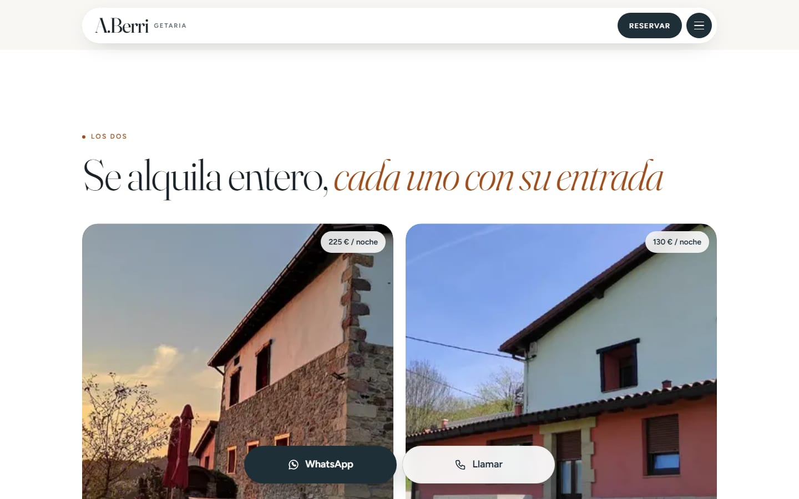
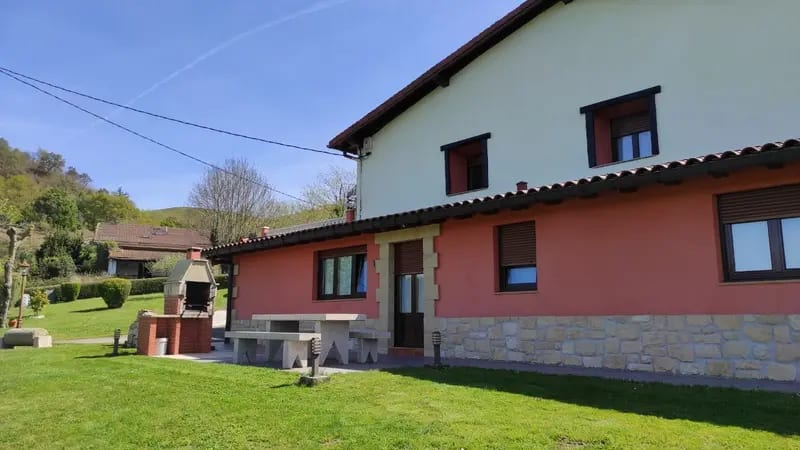
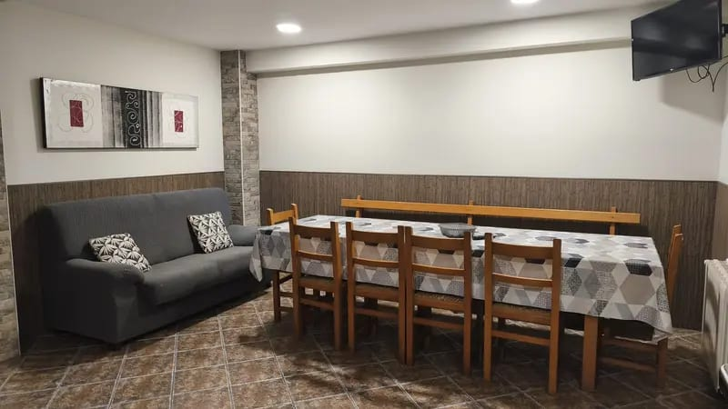
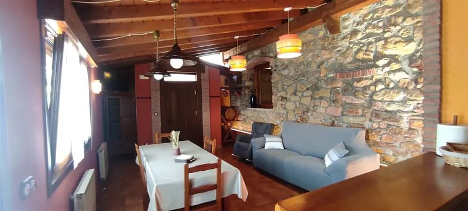
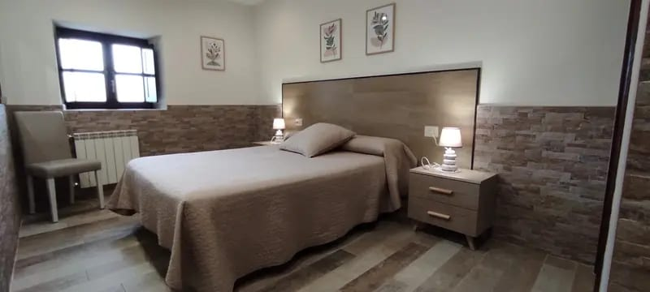
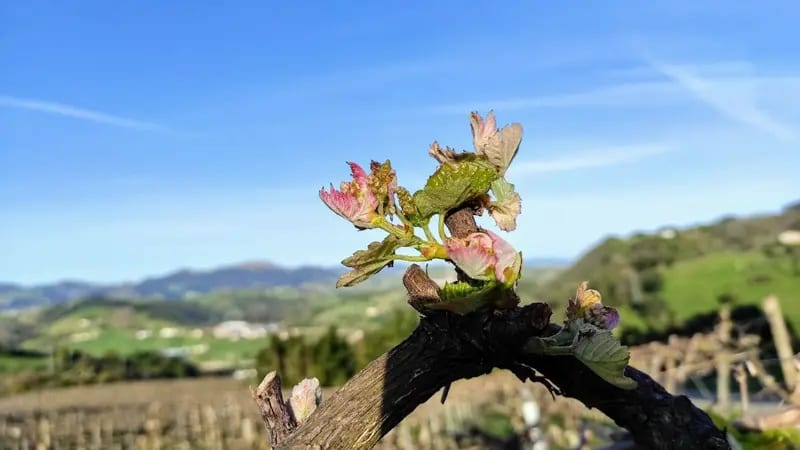
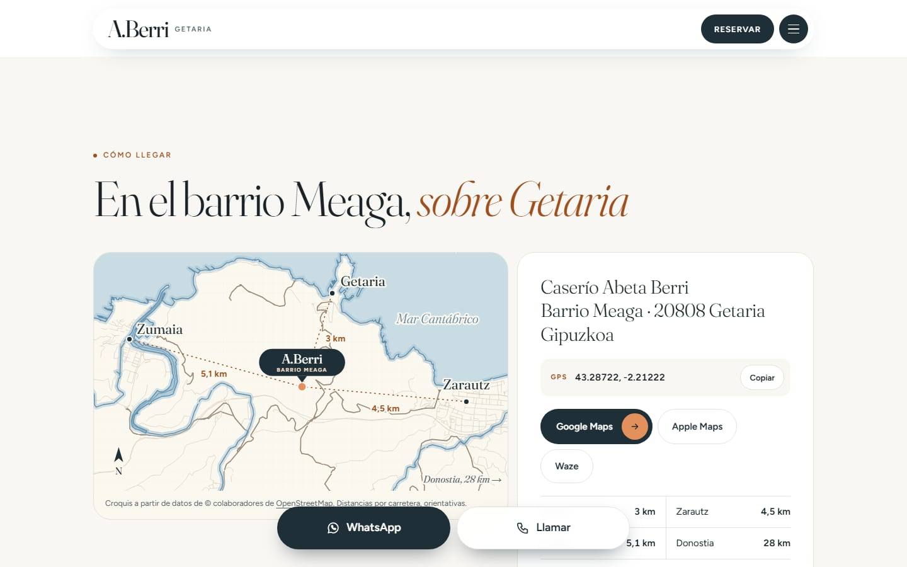

A.Berri: un caserío de Getaria que ahora recibe reservas desde su web.
Casa rural y apartamento entre viñas de txakoli, a cinco kilómetros de Getaria. María Jesús y Carlos querían una web que enseñara la casa tal como es y que las reservas les llegaran directamente, sin depender solo de los portales.


«Eskerrak eman nahi nizkizun webgunea eguneratzen egindako lan handiagaitik. Primeram gelditu da, nabegazio askarra eta diseñuak gure espektatibak bete deitu, lan bikaina eta askarra.»
«Quería darte las gracias por el gran trabajo de actualizar la web. Ha quedado de maravilla: la navegación es rápida y el diseño ha cumplido nuestras expectativas. Un trabajo excelente y rápido.»Traducción del euskera. La opinión original se publica tal cual la escribió.
Lo que más valoró: la atención y la profesionalidad.
Una casa que se alquila entera y un apartamento: dos reservas distintas en la misma web.
A.Berri alquila un caserío de piedra para grupos y un apartamento para parejas o familias, cada uno con su entrada, su precio y su calendario. La web tenía que explicar en segundos qué se alquila, para cuántas personas y qué noches están libres, en castellano, euskera e inglés.
El huésped elige, ve las noches libres y envía su solicitud
Se elige casa o apartamento, se marcan las fechas en un calendario que solo deja libres las noches disponibles y el precio aparece calculado antes de enviar. A los dueños les llega un aviso al correo con todos los datos.

Abierto u ocupado, y la respuesta ya escrita
Desde el móvil marcan cada noche como abierta u ocupada y aceptan o rechazan las solicitudes. Al responder, el correo sale ya redactado en el idioma del huésped y con su firma. Sin programas complicados ni comisiones por reserva.

Cada alojamiento, con su precio y su entrada
Desde la portada se entiende que son dos alojamientos independientes: la casa para grupos de hasta nueve personas y el apartamento para parejas o familias. Cada ficha enseña plazas, precio por noche y fotos propias.

Piedra, madera y jardín, tal como son
La galería se ordena por exterior, casa rural y apartamento, y cada foto se abre a pantalla completa. Son las fotos de la propia casa: el atardecer sobre las viñas, el comedor, la barbacoa del jardín.






Un caserío en el monte, fácil de encontrar
Un plano propio con Getaria, Zarautz y Zumaia, las distancias y los botones para abrir la ruta en Google Maps, Apple Maps o Waze. Es lo primero que pregunta quien llega por primera vez a un caserío.

Y lo que no se ve, también.
- Su propio dominioaberricasarural.com, a su nombre. La web es suya.
- Tres idiomas para GoogleCastellano, euskera e inglés, cada uno con su dirección para que Google lo enseñe a cada visitante.
- Datos de alojamiento para GoogleDirección, horarios de entrada y salida y tipos de alojamiento, en el formato que entiende el buscador.
- Avisos a su correoCada solicitud de reserva llega a su correo de siempre, con todos los datos.
- WhatsApp y llamar, a un toqueUna barra fija en el móvil para quien prefiere preguntar antes de reservar.
- Aviso legal y privacidadEn los tres idiomas, como pide la ley.
¿Tienes un alojamiento y quieres reservas directas?
Cuéntame cómo funciona tu casa y te preparo una propuesta con precio cerrado en menos de 48 horas.